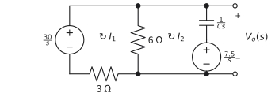
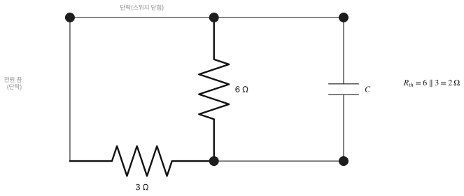

1. 응답식의 세 숫자
14장에서 배운 회로 해석은 다음 순서를 따른다.
회로→KVL·KCL
미분방정식→라플라스
변환→대수식
풀이→역변환→응답식
$v(t)$
시험은 이 순서를 자주 거꾸로 묻는다 : 응답식 → 소자 값
응답식 $v_o(t)$를 먼저 주고 회로 소자의 값을 구하라는 문제다. 실제 강의를 이 스킬에 넣으면, 이 자리에는 "강의 예제 몇 번, 원서 연습문제 몇 번이 모두 이 구조"라는 근거 번호가 들어간다. 원서 본문은 정방향 풀이만 설명하므로 이 유형을 따로 정리해 두어야 한다. 다음 문제를 보자.
그림의 회로에서 스위치는 $t=0$에 닫히며, $t<0$에서 회로는 정상상태이다. $t>0$에서 출력 전압이
$$v_o(t)=20-12.5e^{-0.25t}\ \text{V}$$
일 때, 커패시턴스 $C$의 값을 구하시오.
원서적해법
①$t<0$ : 정상상태이므로 커패시터는 개방이다. 30 V가 $15+6+3=24\ \Omega$에 걸려 1.25 A가 흐르고, $v_o(0^-)=6\times1.25=7.5$ V이다.
②$t>0$ : 스위치가 닫혀 15 Ω이 단락된다. 커패시터를 임피던스 $\frac{1}{Cs}$와 초기전압 전원 $\frac{7.5}{s}$의 직렬로 바꾸면 오른쪽의 s영역 회로를 얻는다.

$t>0$의 s영역 회로
③두 메시 방정식을 세운다.
$$\text{(왼쪽)}\ \ 3I_1+6(I_1-I_2)=\frac{30}{s}\quad\Rightarrow\quad I_1=\frac{2}{3}I_2+\frac{10}{3s}$$
$$\text{(오른쪽)}\ \ \frac{1}{Cs}I_2+\frac{7.5}{s}-6(I_1-I_2)=0\quad\Rightarrow\quad \left(\frac{1}{Cs}+2\right)I_2=\frac{12.5}{s}\quad\therefore\ I_2=\frac{6.25}{s+\frac{1}{2C}}$$
④출력 전압은 커패시터 가지의 전압이다.
$$V_o(s)=\frac{1}{Cs}I_2+\frac{7.5}{s}=\frac{6.25}{Cs\left(s+\frac{1}{2C}\right)}+\frac{7.5}{s}=\frac{20}{s}-\frac{12.5}{s+\frac{1}{2C}}$$
⑤주어진 응답을 변환하면 $\mathcal{L}[v_o(t)]=\tfrac{20}{s}-\tfrac{12.5}{s+0.25}$ 이다. 두 식을 비교하면
$$\frac{1}{2C}=0.25\qquad\therefore\ C=2\ \text{F}$$
풀이에 틀린 곳은 없다. 그런데 ⑤에서 $C$를 결정한 것은 지수의 0.25 하나뿐이었다. 20과 −12.5는 ③, ④를 거쳐 다시 나왔을 뿐 새로운 정보를 주지 않았다. 답은 처음부터 응답식의 지수 안에 있었고, 우리는 그것을 꺼내려고 메시 방정식 두 개와 부분분수를 거친 셈이다.
핵심은 응답식이 이미 주어져 있다는 점이다. 문제를 읽는 순간 다음 의문을 가져야 한다.
∘○응답식을 다 줬는데… 이걸 또 s영역으로 풀어야 해?
이 의문에서 출발하면 응답식의 숫자 세 개가 각각 회로의 어디에서 왔는지를 거꾸로 읽어 낼 수 있다.
시험적해법
적용 조건지수항이 하나인 1차 응답, 스위치 이후 회로가 하나로 고정응답식의 세 숫자를 회로에 하나씩 대응시킨다.
$$v_o(t)=\underbrace{20}_{\text{최종값}}\ \underbrace{-\,12.5}_{\text{초기값}-\text{최종값}}\,e^{-\overbrace{0.25}^{1/\tau}\,t}$$

전원을 끈 $t>0$ 회로
③극(지수) 0.25 : 스위치가 닫힌 뒤 독립전원을 끄면(전압원 단락) 커패시터가 보는 저항은 $6\,\Omega\parallel3\,\Omega=2\,\Omega$이다. 따라서 $\tau=2C$이고 $\ \tfrac{1}{2C}=0.25\quad\therefore\ \underline{C=2\ \text{F}}$
①(검산) 최종값 : 커패시터 개방 → $v_o(\infty)=30\times\frac{6}{6+3}=20$ V ✓
②(검산) 초기값 : $v_o(0^+)=v_o(0^-)=7.5$ V $=20-12.5$ ✓
메시 방정식도, 부분분수도 없다. 그렇다면 이것이 왜 성립하는지 원서 개념으로 확인해 두자. 원서적 해법 ④의 결과 $V_o(s)=\frac{20}{s}-\frac{12.5}{s+1/(2C)}$ 에서
·최종값 정리 : $\displaystyle\lim_{s\to0}sV_o(s)=20$ → 상수항은 최종값이다.
·초기값 정리 : $\displaystyle\lim_{s\to\infty}sV_o(s)=20-12.5=7.5$ → 상수항과 계수의 합은 초기값이다.
·극 $s=-\frac{1}{2C}$ 은 ③에서 $I_2$ 앞의 계수 $\frac{1}{Cs}+2$를 0으로 만드는 $s$이다. 이 계수에는 $\frac{30}{s}$, $\frac{7.5}{s}$ 같은 전원 항이 없다. 즉 극은 독립전원을 끈 회로의 임피던스 $\frac{1}{Cs}+R_{th}=0$에서 정해지고, 그 값은 $s=-\frac{1}{R_{th}C}$이다.ⓐ
ⓐ 2차 이상의 회로에서도 극은 독립전원을 끈 회로의 특성방정식의 근이다. 증명은 해설에 수록한다. 본문에 없는 증명은 ⓐⓑⓒ…로 표시하니 먼저 스스로 시도해 본 뒤 해설에서 확인하자.
정리하면 극은 회로가 정하고, 계수는 전원과 초기조건이 정한다. 응답식이 주어진 문제에서 할 일은 이 대응을 거꾸로 따라가는 것뿐이다.
시험
개념1차 응답식 해부
원서 개념시험 개념원서 간접 개념
$t>0$에서 응답이 $\ x(t)=A+Be^{-pt}\ $ 꼴이면
| 숫자 | 회로에서의 의미 | 구하는 회로 |
|---|
| $A$ | 최종값 $x(\infty)$ | $t\to\infty$ 정상상태 (C 개방, L 단락) |
| $A+B$ | 초기값 $x(0^+)$ | $t=0^+$ 회로 ($v_C$, $i_L$만 연속) |
| $p$ | $1/\tau$ = 회로의 극 | 독립전원을 끈 회로 : $\tau=R_{th}C$ 또는 $\tau=L/R_{th}$ |
적용 조건응답이 상수 + 지수항 하나(1차 회로)이고, 세 숫자가 서로 다른 소자 조합을 정할 때. 지수항이 둘 이상이거나 두 숫자가 같은 조합을 정하면 2절 '숫자를 세라'로 넘어간다.
CORE[응답식이 주어진 역추적 문제] ⟹ [상수 = 최종값, $t=0$ 값 = 초기값, 지수 = $1/\tau$ 를 먼저 쓰고 미지수와 맞춘다]
저자의 특강TIP
끝까지 풀지 않는 용기
응답식이 주어진 문제를 받으면 손이 먼저 s영역 회로를 그리려 한다. 하지만 이 유형에 메시 방정식을 세우면 시험적 해법보다 몇 배의 시간이 든다. 반대로 원서적 해법을 한 번도 끝까지 해 보지 않은 사람은 시험적 해법이 왜 맞는지 설명하지 못하고, 2차 회로처럼 조금만 바뀌어도 무너진다. EX 01은 반드시 두 방법으로 모두 풀어 보자.
EX 02에서 다시 연습해 보자. 이번에는 미지수가 세 개다.
그림의 회로에서 스위치는 $t=0$에 닫히며, $t<0$에서 회로는 정상상태이다. $t>0$에서 $v_o(t)=18-6e^{-2t}$ V일 때, $L$, $R_1$, $R_2$의 값을 구하시오.
미지수가 세 개($L$, $R_1$, $R_2$), 응답식의 숫자도 세 개(18, 12, 2)다. 하나씩 짝지으면 된다.
시험적해법
적용 조건지수항이 하나인 1차 응답, 미지수 셋이 최종값·초기값·극에 하나씩 대응
①최종값 18 : 스위치가 닫히면 $R_1$이 단락되고, 정상상태에서 $L$도 단락이다.
$$v_o(\infty)=36\times\frac{9}{R_2+9}=18\qquad\therefore\ \underline{R_2=9\ \Omega}$$
②초기값 $18-6=12$ : 연속인 것은 인덕터 전류뿐이므로 $i$를 거쳐서 옮긴다. $i(0^+)=\frac{v_o(0^+)}{9}=\frac{4}{3}$ A이고, $t<0$에서
$$i(0^-)=\frac{36}{R_1+R_2+9}=\frac{4}{3}\qquad\therefore\ \underline{R_1=9\ \Omega}$$
③극 2 : 전원을 끄면 $L$이 보는 저항은 $R_2+9=18\ \Omega$이다.
$\ \tfrac{1}{\tau}=\tfrac{18}{L}=2\qquad\therefore\ \underline{L=9\ \text{H}}$
②에서 $v_o$를 곧바로 $t=0^-$ 회로에 대입하지 않은 점에 주목하자. 스위치 순간에 연속인 것은 $v_C$와 $i_L$뿐이다. 초기값은 반드시 이 둘을 거쳐서 옮긴다.
2. 숫자를 세라
EX 01, EX 02는 미지수의 개수와 응답식의 숫자 개수가 딱 맞았다. 그런데 항상 그런 것은 아니다.
그림 회로의 임펄스 응답이 $h(t)=6\left(e^{-2t}-e^{-3t}\right)$, $t\ge0$일 때, $R$, $L$, $C$의 값을 구하시오.
원서적해법
임펄스 응답의 변환은 전달함수이다. $\ H(s)=6\left(\frac{1}{s+2}-\frac{1}{s+3}\right)=\tfrac{6}{s^2+5s+6}$
회로에서 전달함수를 구하면
$$H(s)=\frac{R\parallel\frac{1}{Cs}}{Ls+R\parallel\frac{1}{Cs}}=\frac{\frac{1}{LC}}{s^2+\frac{1}{RC}s+\frac{1}{LC}}$$
비교하면 $\frac{1}{LC}=6,\ \frac{1}{RC}=5$. 식은 두 개, 미지수는 세 개이므로 해는 유일하지 않다. 예를 들어 $C=0.1$ F로 정하면 $L=\frac{5}{3}$ H, $R=2\ \Omega$이다.
$H(s)$에는 숫자가 세 개(분자 6, 분모의 5와 6) 보이지만, 이 회로 구조에서는 분자와 분모의 상수항이 둘 다 $\frac{1}{LC}$로 같을 수밖에 없다. 분자의 6은 새 정보가 아니라 '이 회로가 맞다'는 것을 확인해 주는 숫자다. 보이는 숫자가 아니라 독립인 숫자의 개수를 세야 한다.
시험
개념독립 정보 세기
원서 개념시험 개념원서 간접 개념
①응답식(또는 $H(s)$)에 나오는 숫자를 모두 적는다.
②회로 구조 때문에 자동으로 맞는 숫자를 지운다. (예 : EX 03의 분자 = 분모 상수항)
③남은 숫자의 개수와 미지수의 개수를 비교한다.
| 비교 | 결론 | 답안에 쓸 것 |
|---|
| 같다 | 유일해 | 숫자와 미지수를 하나씩 대응 |
| 미지수 > | 유일해 없음 | "해가 유일하지 않음" + 선택한 값을 명시 |
| 숫자 > | 남는 숫자는 검산용 | 검산 결과를 한 줄로 |
적용 조건회로의 연결 구조는 알고 소자 값만 모를 때. 구조까지 모르면(소자 배치를 설계하는 문제) 먼저 전달함수의 차수로 소자 개수를 정한다.
✎ 답안 · 채점 포인트대학 시험 특화
대학 시험은 서술형 부분점수로 채점된다. 강의록에 채점 기준(소문항 배점, 단위 감점 등)이 있으면 이 박스는 그 기준을 근거로 쓴다. 이 유형은 다음 순서로 쓴다.
- $t<0$ 회로 → 초기값 (식 한 줄)
- $t\to\infty$ 회로 → 최종값 (식 한 줄)
- 전원을 끈 회로의 $R_{th}$ → $\tau$ (그림 또는 식 한 줄)
- 응답식과 비교 → 소자 값, 단위까지
- 해가 유일하지 않으면 "해가 유일하지 않음"을 쓰고, 선택한 값을 밝힌다.
강의 VS 연습문제
| 출처 | 출제 요소 |
|---|
| 강의 예제 수준 | 1차 회로, 응답식이 식으로 주어짐, 미지수 1~3개 |
| 강의 예제 수준 | 2차 전달함수, 미지수 > 독립 정보 → 유일해 없음 |
| 연습문제 변형 | 응답식 대신 그래프가 주어짐 → 그래프의 점에서 숫자 세 개를 읽어야 함 |
| 연습문제 변형 | 연산증폭기가 섞임 → 증폭기 이득이 최종값·초기값에 곱해짐 |
| 연습문제 변형 | 미지수 5개, 독립 정보 3개(극 2개 + 이득) → 2개를 골라야 함 |
실제 자료를 넣으면 이 표의 왼쪽 칸에 강의 예제 번호와 원서 연습문제 번호가 들어간다. 응답식의 숫자를 회로로 읽는 기준만 잡혀 있으면 어떤 변형이 와도 출발점은 같다.